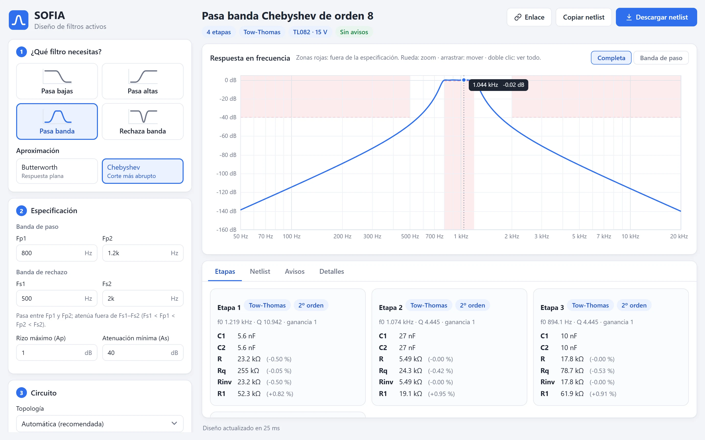
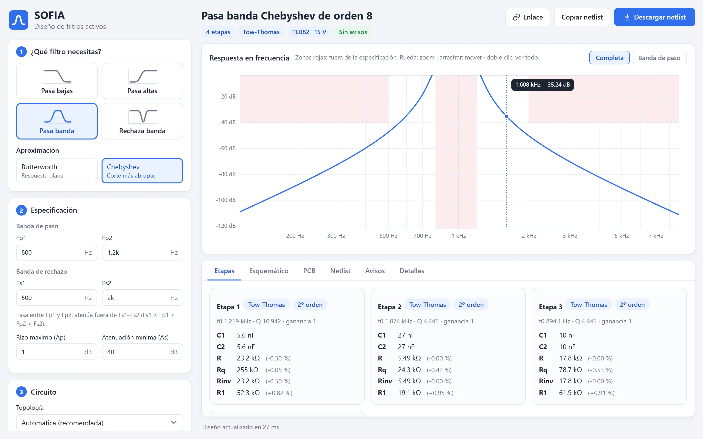
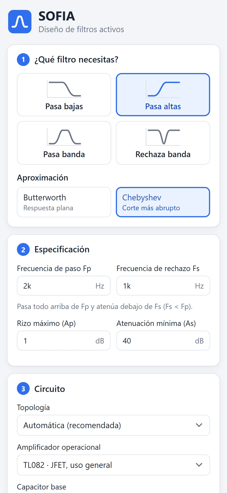
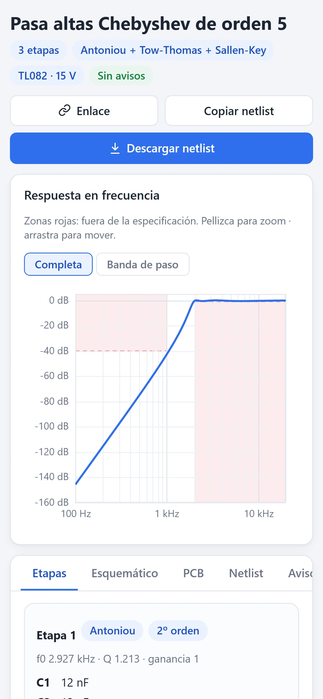

Cálculo en vivo
Cambias una frecuencia o el rizo y la respuesta, las etapas y el netlist se actualizan al momento.
Versión 0.3.0 · ahora también en el navegador
Escribe la especificación y SOFIA calcula el orden, reparte las etapas, elige resistencias y capacitores comerciales y te entrega el netlist listo para simular en LTspice. Sin instalar nada.

Características
Cambias una frecuencia o el rizo y la respuesta, las etapas y el netlist se actualizan al momento.
Un solo resistor E96 (1 %) por posición y capacitores E12. Cada valor muestra su error contra el ideal.
Trae el modelo del opamp, la alimentación con tierra virtual y el barrido AC. Ábrelo directo en LTspice o ngspice.
Lo que queda fuera de la especificación se marca en rojo. Acerca con la rueda o pellizcando y lee cada punto.
Te advierte si un opamp va a oscilar, si una etapa tiene un Q muy alto o si la serie de resistencias no alcanza.
El enlace de la app guarda toda la especificación: mándalo y quien lo abra ve exactamente el mismo filtro.
Cómo funciona
Pasa bajas, pasa altas, pasa banda o rechaza banda, con respuesta Butterworth (plana) o Chebyshev (corte más abrupto).
Frecuencias de paso y de rechazo, rizo y atenuación. Acepta notación de ingeniería: 1k, 4.7k, 10n.
Revisa las etapas y descarga el netlist. En LTspice lo abres, presionas Run y ves la respuesta.
Recorrido



Circuitos
Con la opción Automática, SOFIA decide la topología de cada etapa según su Q y el tipo de filtro. También puedes forzar una: si no puede realizar esa etapa, usa Tow-Thomas y te lo avisa.
| Topología | Cuándo la elige |
|---|---|
| Sallen-Key | Pasa bajas y pasa altas con Q ≤ 1.2, y las etapas de primer orden |
| Antoniou (GIC) | Pasa bajas y pasa altas con Q entre 1.2 y 4 |
| MFB | Pasa banda con Q ≤ 3 |
| Tow-Thomas | Rechaza banda, y cualquier etapa de Q alto |
Historia
SOFIA nació como un programa de escritorio en C++ Builder. Esta versión lo reescribe en Python para que funcione en Windows, en el navegador y en cualquier sistema. Al comparar las dos versiones con un banco de 12 casos simulados en SPICE se encontraron y corrigieron errores de cálculo y de circuito.
Ver la lista completa de correcciones →Descargas
Funciona en computadora y celular. La primera vez descarga unos 6 MB; después abre al instante.
Abrir la app →Un solo archivo .exe: no necesita Python ni internet. Guarda el netlist con el modelo incluido.
Ir a descargas →Paso a paso con capturas: diseñar, leer los resultados, simular en LTspice y armar el circuito.
Descargar PDF →¿Prefieres la línea de comandos o Linux/macOS? El código está en GitHub con instrucciones para correrlo con Python.
Preguntas frecuentes
No. La app corre en el navegador: el mismo motor de cálculo en Python de la versión de escritorio se ejecuta en tu computadora o celular, sin servidor. Para simular necesitas un simulador SPICE como LTspice (gratuito).
La versión web necesita internet la primera vez para descargar el intérprete de Python; después el navegador lo guarda. El ejecutable para Windows funciona completamente sin conexión.
El orden es el mínimo entero que cumple la especificación. La selectividad que sobra se reparte como margen entre la banda de paso y la de rechazo, para que el filtro siga cumpliendo con resistencias comerciales. Los márgenes aparecen en la pestaña Detalles.
El TL082 funciona bien en la mayoría de los casos de audio. Si solo tienes 5 V, usa el LM324. Los LM6164 y LM6165 son descompensados y oscilan en estas etapas; la app te lo avisa.
Porque el original tenía errores de cálculo y de circuito: ninguno de los 12 casos del banco cumplía la especificación. La versión nueva cumple los 12. La lista de diferencias está en el repositorio.
Usa el botón Enlace de la app. El link guarda el tipo de filtro, la especificación y el circuito; quien lo abra verá el mismo diseño.
Abre la app, escribe la especificación y descarga el netlist en menos de un minuto.
Abrir la app